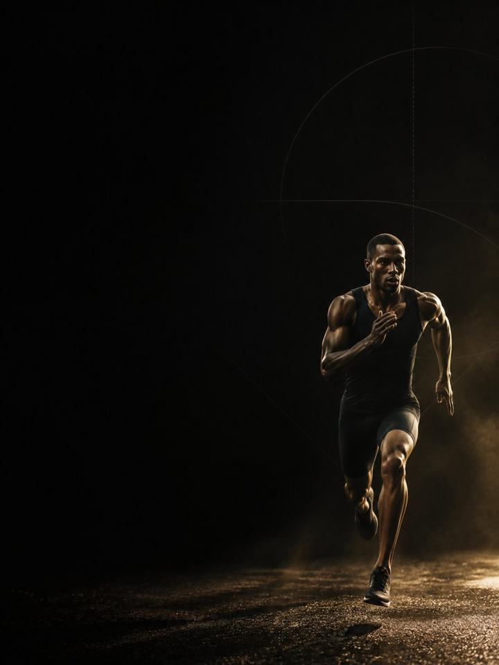

التحمل · المنافسة
القوة تتلاشى أسرع مما تظن. والحفاظ عليها لا يكلّف شيئًا تقريبًا.
- مناسب لـالعدّائين وراكبي الدراجات ولاعبي الترايثلون في موسم السباقات
- أيام التدريب2 في النادي أسبوعيًا، و1 في أسابيع السباقات
- مدة الجلسة26–31 دقيقة
- المعداتنادٍ متكامل فيه بار وأجهزة ودرجة
- الصيغةملف PDF للهاتف، وكل تمرين مرتبط بفيديو توضيحي
لمن هذا البرنامج
العدّاؤون وراكبو الدراجات ولاعبو الترايثلون في موسم السباقات، الذين يريدون إنهاء الموسم بالقوة التي بدأوه بها.
في هذه الكتلة يرتكب معظم رياضيي التحمّل الخطأ نفسه: يتوقّفون عن رفع الأثقال حين تبدأ السباقات. تنخفض القوة بشكل ملموس خلال أسابيع قليلة من التوقّف، وبحلول منتصف الموسم يعودون إلى حيث بدأوا، وقد ذهبت قدرة الأوتار في الوقت الذي تكون فيه السباقات بأعلى تكرار وأعلى شدة في السنة. والحل ليس الاستمرار في التدريب الشاق، بل الاستمرار في التدريب الثقيل بحجم شبه معدوم: ثلاث مجموعات فعلية، وثلاثة تكرارات، في نحو 26–31 دقيقة. ما يكفي للحفاظ على كل ما بنته كتلتا الأساس والبناء، وخفيف بما يكفي حتى لا تلاحظه ساقاك أبدًا.
موقعه في السنة: الكتلة 3 من 4. الأساس، والبناء، والمنافسة، والاستشفاء. طبّقه طوال موسم السباقات، من سباقك الأول إلى الأخير. الهدف هو الحفاظ، لا المكاسب.
أسبوعك
جلستان قصيرتان في النادي في أسبوع عادي من موسم السباقات، وجلسة واحدة في أسبوع السباق.
أسبوع عادي
| الأحد | الاثنين | الثلاثاء | الأربعاء | الخميس | الجمعة | السبت |
|---|---|---|---|---|---|---|
| اليوم 1 | تدريب | اليوم 2 | تدريب | تدريب | راحة | تدريب طويل |
أسبوع السباق
| الأحد | الاثنين | الثلاثاء | الأربعاء | الخميس | الجمعة | السبت |
|---|---|---|---|---|---|---|
| اليوم 1 | تدريب | تدريب | راحة | جري تنشيطي خفيف | راحة | السباق |
في أسبوع السباق تأتي الجلسة الوحيدة مبكرًا، بلا شيء ثقيل وبلا بلايومترك خلال 72 ساعة من الانطلاق.
كل جلسة تسير بالطريقة نفسها:
- الإحماء، 6–8 دقائق. التسلسل المعتاد، مختصرًا. أنت أصلًا في لياقة السباق.
- البلايومترك، 3 دقائق. بضع ملامسات حادة للحفاظ على النابضية. لا تكون أبدًا في الساعات الـ72 التي تسبق سباقًا.
- الرفعات الرئيسية، 12–15 دقيقة. رفعتان، ثلاث مجموعات فعلية لكل منهما، ثقيلة وسريعة. لا شيء حتى الفشل العضلي، أبدًا.
- عمل الأوتار، 5 دقائق. رفع السمانة ورفع مقدّمة القدم. الشيء الوحيد الذي يبقى في كل جلسة.
إذا امتدّت جلسة النادي في موسم السباقات إلى خمس وأربعين دقيقة، فهي طويلة أكثر من اللازم. الوقت الإضافي لا يشتري شيئًا، ويكلّفك تمرينًا جيدًا لاحقًا في الأسبوع.
كيف تتقدّم الأسابيع الـ12
فقدان القوة أسرع من بنائها، لكن الحفاظ عليها أرخص بكثير. تظهر خسائر ملموسة في القوة القصوى خلال أسابيع قليلة من التوقّف، وتتبع صلابة الأوتار النمط نفسه. ومع ذلك فإن الحفاظ على هذه الصفات لا يحتاج إلا إلى جزء صغير من العمل الذي بناها. خفض الحجم بشدة مع إبقاء الحمل مرتفعًا يحافظ على القوة، أما خفض الشدة فهو ما يُفقدها. والنصف الآخر من هذه الكتلة هو التوقيت. يترك الرفع الثقيل الجهاز العصبي والعضلات متعبة لنحو يوم إلى ثلاثة أيام بحسب الجرعة، ولهذا الوصفة صغيرة، ولا يقترب أي شيء ثقيل من يوم السباق.
ثلاث مراحل، مدة كل منها أربعة أسابيع. يثبت الحمل، ويخفّ الجهد، ويقلّ كل شيء تدريجيًا كلما اقترب سباقك الأساسي.
| الأسابيع 1–4 | الأسابيع 5–8 | الأسابيع 9–12 | |
|---|---|---|---|
| المرحلة | الحفاظ على القوة | معدّل إنتاج القوة | الانتعاش للسباق |
| الهدف | الحفاظ على القوة القصوى خلال موسم السباقات | الحفاظ على معدّل إنتاج القوة خلال موسم السباقات | التخلّص من التعب المتراكم قبل السباقات الأساسية |
| كيف يبدو | ثلاث مجموعات فعلية، بعيدة عن الفشل العضلي. تبدو سهلة، وهذا مقصود | الحمل نفسه، بكمية أقل منه. سرعة البار أهم من الرقم | جلسة واحدة في أي أسبوع سباق، مبكرًا. الأسبوع 12 هو أسبوع السباق: جلسة واحدة مدتها خمس عشرة دقيقة، أو لا شيء إطلاقًا |
| المجموعات الفعلية أسبوعيًا | 30 | 30 | 24 |
| متوسط الجهد | جهد 7.1/10، والتكرارات المتبقية نحو 3 | جهد 6.9/10، والتكرارات المتبقية نحو 3 | جهد 6.0/10، والتكرارات المتبقية نحو 4 |
| مرات الهبوط أسبوعيًا | 65 | 69 | 65 |
المرحلة في لمحة
المجموعات التدريبية أسبوعيًا حسب ما تدرّبه. الخط المتقطع هو مستوى الجهد.
موقع هذه المرحلة في السنة التدريبية
نفّذ المراحل الأربع بالترتيب لتكتمل سنة تدريبية كاملة.
الجهد (RPE) تقييم من 10 لمدى صعوبة المجموعة. والتكرارات المتبقية هي عدد التكرارات الجيدة الإضافية التي كنت تستطيع أداءها، فعبارة «التكرارات المتبقية نحو 3» تعني أنه يتبقى في الخزان نحو 3 تكرارات.
أسابيع التخفيف: الأسبوعان 6 و12 يخفّضان المجموعات إلى النصف. وهما مصمَّمان ليقعا حول السباقات، فانقلهما ليتوافقا مع تقويم سباقاتك الفعلي. التقويم هو الذي يقرّر.
القواعد التي تجعله ينجح
- ثلاث مجموعات فعلية لكل رفعة هي الجلسة كاملة. الحفاظ يحتاج إلى جزء صغير من العمل الذي بنى القوة. ثلاث مجموعات من ثلاثة تكرارات، مرتين في الأسبوع، تحافظ على ما منحتك إياه كتلتا الأساس والبناء.
- أبقِ الحمل، وضع سقفًا للحجم. الشدة هي التي تحافظ على القوة، لا المجموعات. ورفع الأوزان الخفيفة كثيرًا هو النسخة التي تخسر كل شيء بحلول منتصف الموسم.
- لا شيء ثقيل، ولا قفز، خلال 72 ساعة من سباق. يترك الرفع الثقيل تعبًا لمدة يوم إلى ثلاثة أيام. نفّذ الجلسة في بداية الأسبوع وانسَ أمرها.
- لا فشل عضلي أبدًا، طوال الموسم. كل مجموعة تنتهي وما زالت لديك تكرارات متبقية. موسم السباقات ليس الوقت المناسب لاكتشاف حدّك.
- تمارين السمانة لا تُحذف أبدًا. مشكلات وتر أكيلس هي ما يُنهي مواسم التحمّل. ثلاث مجموعات من رفع السمانة الثقيل البطيء، في كل جلسة، مهما حُذف غيرها.
- احسب مرات الهبوط، لا المجموعات فقط. كل قفزة، وحجلة، ووثبة، وهبوط من ارتفاع هو هبوط تدفع أوتارك ثمنه، بما في ذلك قفزات الإحماء. أبقِ الأسبوع تحت نحو 100 هبوط داخل الموسم، مع احتساب تدريبك إضافةً إليه.
المصطلحات
- الكتلة التدريبية: 12 أسبوعًا. هذا البرنامج. تطوّر الكتلة الواحدة مجموعة واحدة من الصفات إلى مستوى محدّد.
- المرحلة (الدورة المتوسطة): 4 أسابيع. تستهدف كل منها صفة واحدة. وأربعة أسابيع اختيار لا قاعدة، فالمدة تتبع الهدف.
- الأسبوع التدريبي (الدورة الصغرى): حيث يرتفع الجهد، وتُضاف المجموعات، ويقع أسبوع التخفيف.
- السنة التدريبية (الدورة الكبرى): أربع كتل بالترتيب (الأساس، والبناء، والمنافسة، والاستشفاء)، نحو 48 أسبوعًا.
كيف تقيس تقدّمك
يبدأ كل أسبوع بفحص مدته 90 ثانية: ثلاث وثبات طويلة من الثبات في بداية اليوم 1، وتحتفظ بأفضلها. إذا كانت النتيجة أقل من متوسطك المتحرّك بأكثر من 10%، فخفّف ذلك اليوم: تُحذف تمارين القدرة الانفجارية، وتخسر كل رفعة مجموعة واحدة، أيًا كان المكتوب في الصفحة.
شكل التقدّم الجيد
- الأسابيع 1–4: تبدو الجلسات سهلة أكثر من اللازم تقريبًا. وهذا صحيح. قاوم إضافة مجموعات.
- الأسابيع 5–8: هنا ينجرف الرياضيون إلى تخطّي النادي. والذين لا يفعلون هم الذين يبقون سالمين في الشهر الأخير من الموسم.
- الأسابيع 9–12: يقلّ الحجم أكثر كلما اقترب سباقك الأساسي.
مقياس النجاح في هذه الكتلة خط مستوٍ، لا خط صاعد: أن تكون في سباقك الأخير بقوتك نفسها في سباقك الأول.
احترم الأسبوع
احسب كل شيء: السباقات، وجلسات التدريب، والنادي، والنوم. القفزات المفاجئة في حمل التدريب الأسبوعي هي أوثق مؤشر على الإصابة في الرياضة غير الاحترافية. في أسبوع تدريب ثقيل، احذف جلسة نادٍ أو اختصر تمارين القدرة الانفجارية، لكن لا تختصر التدريب والتعافي معًا أبدًا. احمِ 7–9 ساعات من النوم، فهو أقوى أداة متاحة للأداء، وأرخصها.
الأدلة العلمية
كل برنامج في المكتبة مبني على أبحاث منشورة، وقوة تلك الأبحاث مذكورة صراحةً لا ضمنًا. وحيث تكون الأدلة محدودة، تقول الصفحة ذلك.
| النتيجة | المصدر | ما لا تُظهره |
|---|---|---|
| تدريب القوة يخفض الإصابات الرياضية إلى أقل من ثلث معدلها في المجموعة الضابطة. أما الإطالة فلا تخفضها. | Lauersen, Bertelsen & Andersen, Br J Sports Med 2014. Meta-analysis of 25 RCTs, 26,610 participants. PMID 24100287 | نسبة الخطر 0.32 لتدريب القوة و0.96 للإطالة. تفاوتت التجارب كثيرًا، ولم تكن الجرعة موحّدة. |
| أي وصفة تدريب معقولة أفضل من عدم التدريب. الأحمال الأثقل تحتل المرتبة الأعلى للقوة، والمجموعات المتعددة تحتل المرتبة الأعلى لحجم العضلات. | Currier et al., Br J Sports Med 2023. Network meta-analysis, 178 strength and 119 hypertrophy studies. PMID 37414459 | كانت الفروق بين الوصفات صغيرة، وكلها نجحت. |
ماذا بعد
بعد 12 أسبوعًا:
- الكتلة التالية: التحمل · الاستشفاء
- منطقة واحدة تحتاج إلى عمل: السلسلة التصحيحية
قبل الشراء: احصل على موافقة طبية أولًا إذا
- كان لديك ألم في الصدر، أو ضيق تنفس غير معتاد، أو خفقان، أو دوخة أثناء المجهود.
- كان لديك ضغط دم مرتفع غير منضبط، أو مرض قلبي معروف، أو خضعت لعملية جراحية مؤخرًا.
- كنتِ حاملًا أو بعد الولادة بفترة قصيرة. احصلي على موافقة وبرنامج مخصص أولًا.
- كان لديك ألم حاد في مفصل واحد لا يهدأ. ابدأ ببرنامج أكسس التصحيحي المناسب.
هذا البرنامج إرشاد عام للياقة البدنية، ولا يغني عن التقييم الطبي.